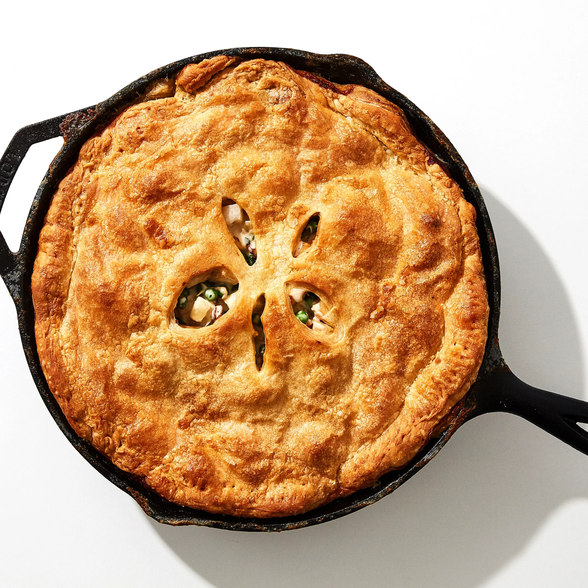

One-Skillet Chicken Pot Pie

This recipe for homemade chicken pot pie from Molly Baz (watch her make it) uses two major
shortcuts: The first is using shredded chicken from a rotisserie bird instead of cooking boneless chicken
breasts or thighs. The second is using store-bought puff pastry. And since this is a one-skillet affair,
there’s no pie plate, baking dish, Dutch oven, or food processor to clean. The results?
An easy take on a family favorite, with minimal prep time, that is, in fact, dinner party worthy.
Know this about puff pastry: Letting it thaw overnight in the fridge is nonnegotiable. It’ll crack
and become a huge mess if it’s still partially frozen. This slightest bit of planning is the key to flaky pot pie
perfection.
You can make the cooked chicken mixture up to three days ahead—transfer it to an airtight container
and chill. When you’re ready to serve, assemble as instructed below, then slide the skillet into the oven
to brown the crust and reheat the pot pie filling.
We like to brush the top of the dough with cream for this recipe, not egg wash, for a golden brown crust
with a rustic sheen (and because it saves us from using an extra ingredient). Cooking the pie on a tray
makes it easier to slide into the oven and catches any drippings. If your oven runs hot and the crust
starts to singe, very loosely cover it with foil for the last few minutes.
Ingredients
6 Servings
- 1 2–3 lb. rotisserie chicken
- 2 medium onions
- 1 lb. turnips
- 6 garlic cloves
- 1 Tbsp. thyme leaves (from about 2 sprigs)
- 3 Tbsp. unsalted butter
- 2½ tsp. kosher salt
- 1½ tsp. freshly ground black pepper
- 3 Tbsp. all-purpose flour, plus more for surface
- 1 cup dry white wine
- 2 cups heavy cream, divided
- 1 10-oz. bag frozen peas
- 1 14-oz. box puff pastry, thawed overnight
Preparation
-
Place a rack in center of oven; preheat to 400°. Remove and discard skin of 1 rotisserie chicken, then
shred meat into 1" pieces (you should have 4–5 cups meat); set aside. You won't need the bones and
carcass from the chicken for this recipe, but that doesn't mean you should throw them out—sling them
into a saucepan, cover with water, add whatever aromatics you've got lying around, and you've got the
makings of a couple decent quarts of chicken stock.
-
Time to prep your vegetables! Cut 2 onions in half through root, trim root ends, then peel. Finely chop
onion and transfer to a medium bowl.
-
Peel 1 lb. turnips, then trim off knobby root ends. Cut in half through the root end. Cut each half into
¾"-thick planks, then finely chop planks into ¾" pieces. Transfer to another medium bowl.
-
Lightly smash 6 garlic cloves with the flat side of a chef’s knife. Peel, then coarsely chop. Transfer
to bowl with turnips.
-
Add 1 Tbsp. thyme leaves (from about 2 sprigs) to bowl with turnips and garlic.
-
Melt 3 Tbsp. butter in a 12" skillet, preferably cast iron, over medium heat. (Just make sure whatever
you're using is oven-safe—you don't want a melting plastic handle.) Add onions and cook, stirring
occasionally, until very soft but not browned, 5–6 minutes.
-
Add turnip mixture, season with 1 tsp. salt and 1½ tsp. pepper, and cook, stirring often, until just
beginning to soften, 3 minutes.
-
Sprinkle 3 Tbsp. flour over vegetables and cook, stirring constantly, until flour begins to stick to bottom
of pan, about 30 seconds. The flour is going to help thicken the gravy you're trying to create.
-
Add 1 cup wine and cook, stirring constantly, to burn off some of the alcohol, about 1 minute.
-
Set aside 1 Tbsp. cream. Add remaining cream, reserved chicken, 10 oz. peas, and 1½ tsp. salt and
bring to a simmer. Taste and adjust for seasoning. Cook, tossing occasionally, until warmed through, 3-4 minutes.
Transfer skillet to a rimmed baking sheet, which will prevent any juices that bubble out of
the pan from spilling onto your oven floor.
-
Roll out 14 oz. puff pastry on a lightly floured surface into a 13" square (large enough to cover skillet
with a bit of overhang). Roll pastry up onto rolling pin. (You could use an empty wine bottle if you don't
have a rolling pin.) Unfurl pastry from rolling pin, draping it over skillet.
-
Trim pastry so that there is a 1" border all around. Fold edge of puff pastry under itself. Crimp edges
with a fork (just like you would do when making the top crust of a pie).
-
Using a pastry brush, brush top of pastry with reserved cream. Cut 5–6 small slits in the center so steam
can escape. Bake pot pie until crust is light golden brown, 22–24 minutes.
-
Reduce oven temperature to 350° and continue to bake until filling is bubbling around the edges and
crust is well browned, 25–35 minutes longer. Let sit 10 minutes before serving.